Startup discovery Sprint
Zanim zaczniesz budować, porozmawiaj z klientami:
pokażemy Ci, jak znaleźć problem, za którego
rozwiązanie ktoś będzie gotowy zapłacić.
Startupy rzadko upadają przez brak kasy czy złą technologię.
Najczęściej upadają, bo zbudowały coś, czego nikt nie chce.
Daj nam miesiąc
pokażemy Ci, jak rozmawiać
z potencjalnymi klientami i znaleźć
problem do rozwiązania.
AplikujDeadline early bird: 19.10
Czego się nauczysz?
-
Prowadzić discovery calle
Większość ludzi pyta: „Czy kupiłbyś to?”. Każdy odpowie, że tak. To bezwartościowy feedback. Pokażemy Ci, jak pytać, żeby usłyszeć prawdę.
-
Szukać lekarstwa, nie witaminy
Witamina to „fajnie by było”. Lekarstwo to „potrzebuję tego na wczoraj”. Za witaminy klienci płacą niechętnie, za lekarstwa od razu.
-
Pisać wiadomości, na które ktoś odpisze
Twoja wiadomość ląduje w skrzynce obok 50 innych, w większości wygenerowanych przez AI. Jeśli brzmisz jak wszyscy, nikt Ci nie odpisze.
-
Budować MVP w kilka godzin
MVP to najtańszy sposób, żeby sprawdzić, czy ktoś zapłaci. Czasem nawet bez linijki kodu.
Zobacz, jak robili to inni
Jeśli algorytm podsunął Ci ten film
Chodźcie ze mną na Urbex…
Pomysł na Homi…
Chodźcie z nami na Urbex…
Dwie rady na start…
Chodźcie ze mną na Urbex…
Wyskalowałem firmę do…
Chodźcie ze mną na Urbex…
Klient, który cię lubi…
Jak to działa
Sprint w Warszawie.
Dwa dni na Google for Startups Campus Warsaw. Super merytoryczne prelekcje, a pomiędzy sporo czasu na indywidualną pracę i konsultacje z mentorami.
Posłuchacie między innymi o:
- Znajdź swoje „why?”
- Jak szukać powtarzalnych problemów klientów?
- Discovery calle: jak zadawać pytania?
- Jak robić outbound i dobić się do klientów?
- Skąd wziąć pieniądze na pierwszy startup?
- Jak budować produkty w erze AI
Rozmowy z klientami.
Dzwonisz, piszesz, pytasz i słuchasz. Pomaga Ci w tym nasza grupa na WhatsAppie i kilka spotkań online.
Zakończenie Discovery Sprintu oraz fast track do MD Fellowship.
Masz już problem, który chcesz rozwiązać? Aplikuj do MD Fellowship, a pomożemy Ci zbudować na nim firmę.
Wszyscy, którzy ukończą program, trafiają od razu do 2. etapu rekrutacji do MD Fellowship.
Nie robimy konkursów. Pomagamy serio budować firmy.
MD Fellowship to społeczność młodych w wieku 18–24 lat, którzy już teraz budują swoje pierwsze firmy, startupy i projekty.
Każdy MD Fellow otrzymuje mentoring 1:1 od topowych przedsiębiorców, którzy przeszli drogę od pomysłu do globalnych sukcesów.
1400+
aplikacji do MD Fellowship
54
Fellows
2×
nabór w roku
1:1
mentoring topowych przedsiębiorców
Z kim będziesz pracować
Ludzie, którzy budowali firmy, sprzedawali, popełniali błędy i wyciągali z nich wnioski.
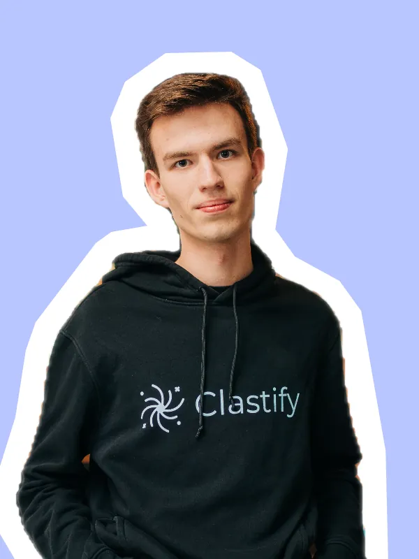
Założyciel Clastify, platformy dla uczniów matury IB, którą rozwinął do 400 tys. użytkowników miesięcznie i w 2026 roku sprzedał funduszowi Hawk Infinity.
Jan Kolaczyk
(exited) Founder Clastify
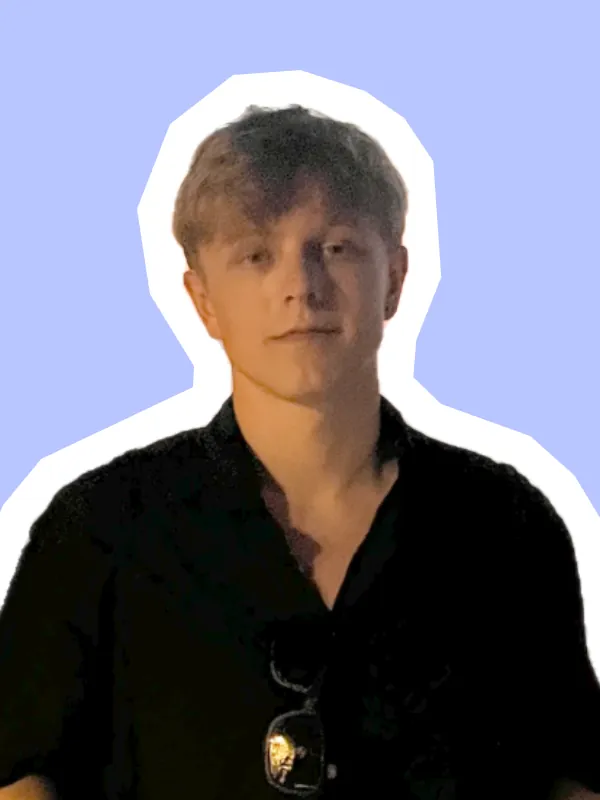
Wcześniej: tworzył wertykalnego agenta AI, który automatyzuje pracę spedytorów. Teraz: stealth startup.
Kacper Gadomski
Co-Founder Talona
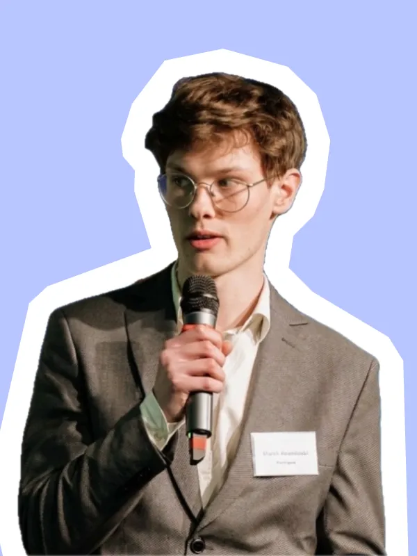
Buduje Rinvo – AI dla branży automotive, generuje kilkanaście tys. zł MRR.
Marek Rewoliński
Co-founder & CEO Rinvo
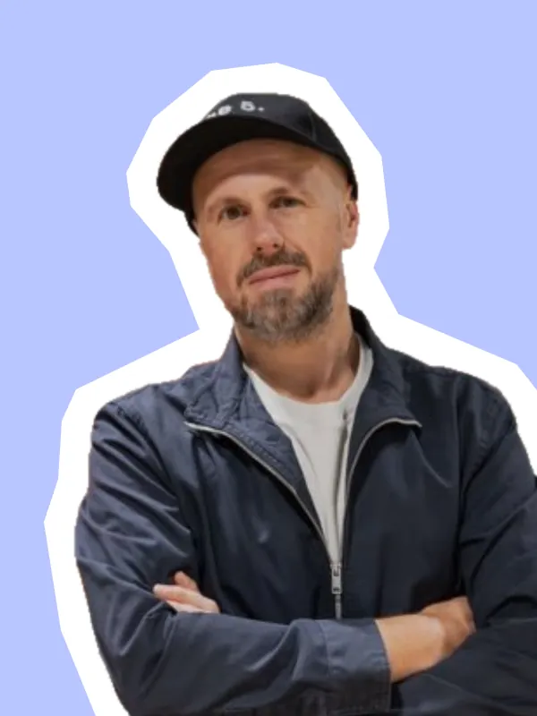
Co-Founder Divante (exit przy wycenie 260 mln zł) i Vue Storefront, inwestor w ponad 30 firm, m.in. ElevenLabs. Prowadzi Open Mercato i Catch The Tornado, jest autorem książki „The 5”.
Tomasz Karwatka
Co-Founder Open Mercato, Catch the Tornado, angel investor
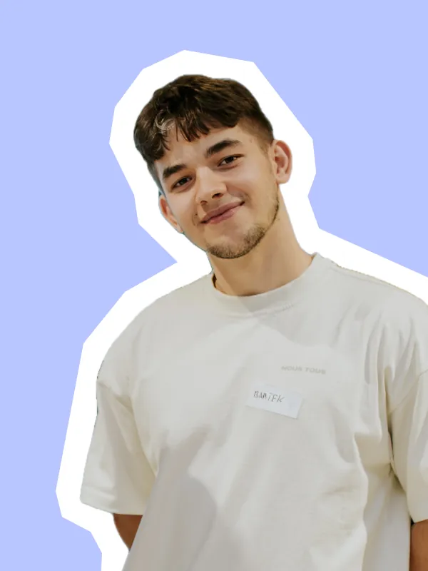
Wcześniej: medtech, budował AI do analizy preparatów histopatologicznych. Teraz: something new.
Bartek Nowak
Stealth Startup
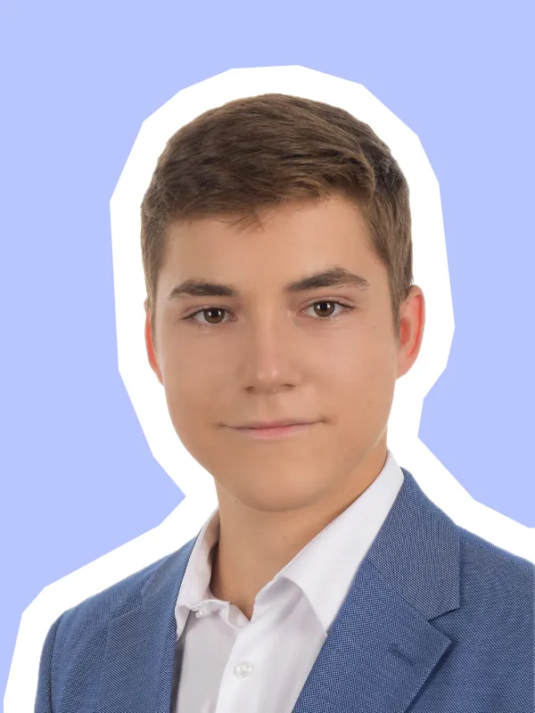
Buduje Aurum Olympia – firmę przygotowującą uczniów liceum do Olimpiad Matematycznych i egzaminów.
Tomek Ostrowski
Founder Aurum Olympia
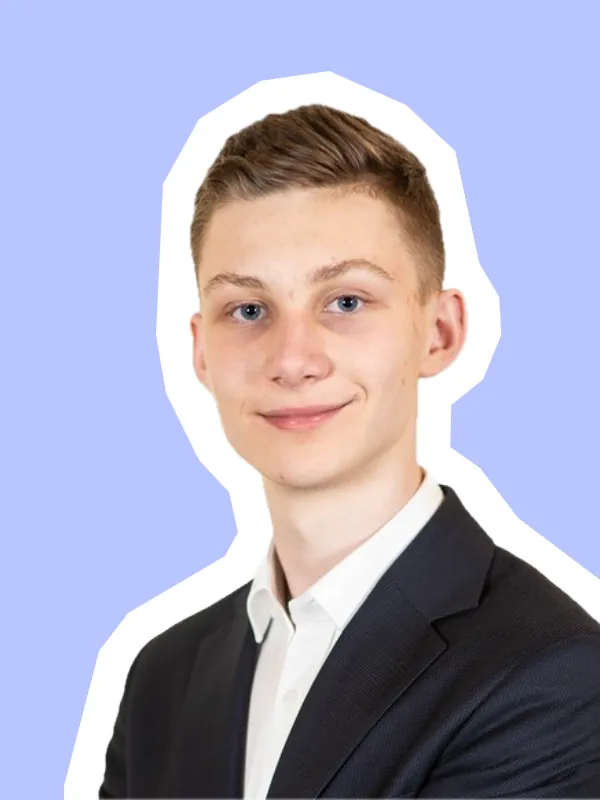
Piotrek buduje Repto.pl – narzędzie do automatycznego zbierania opinii na Google dla branży medycznej oraz beauty, generuje kilkanaście tys. zł MRR. Uczęszcza do trzeciej klasy technikum.
Piotrek Czupryński
Founder Repto.pl
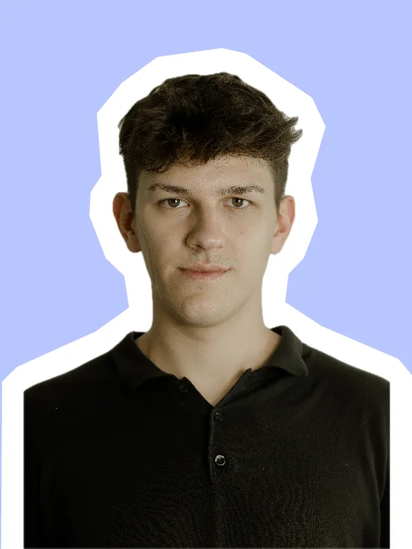
Buduje Quomerce, automatyzuje audyty sklepów internetowych.
Maciej Foks
Co-founder Quomerce
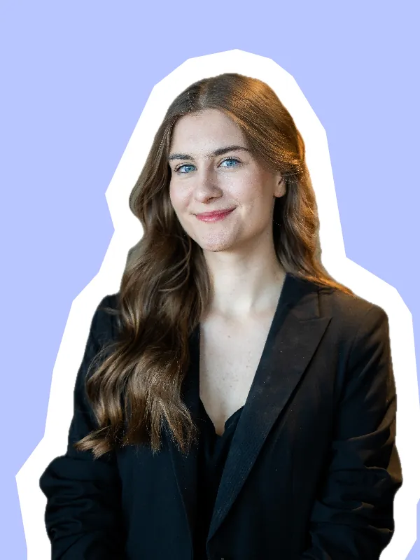
Teraz: MD Fellowship. Wcześniej: sprzedaż do enterprise (Marriott, PepsiCo, Unilever, InPost itd.), kampanie w SM o zasięgu 2 mln organicznie i eventy na 500 osób.
Weronika Gątkowska
CEO MD Fellowship
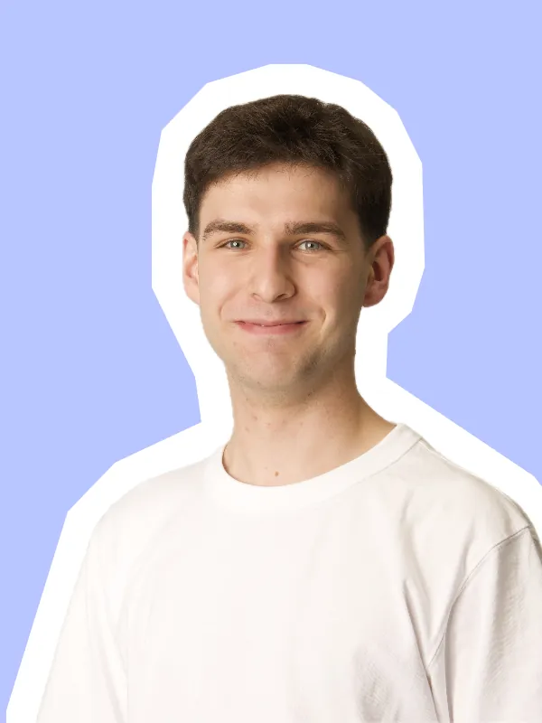
Po 4 latach spędzonych w e-commerce i budowaniu analogisklep.pl, przyszedł czas na nowy projekt.
Mikołaj Nowak
Stealth Startup
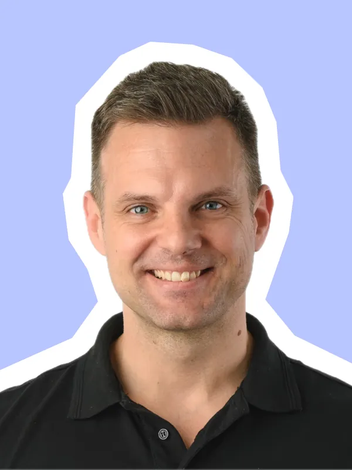
Co-founder PizzaPortal.pl i iTaxi, były CEO SunRoof, inwestor w ponad 20 startupów. Venture Partner w Eleven Ventures, autor książki „The Power of Momentum”.
Lech Kaniuk
Founder Kepta, angel investor
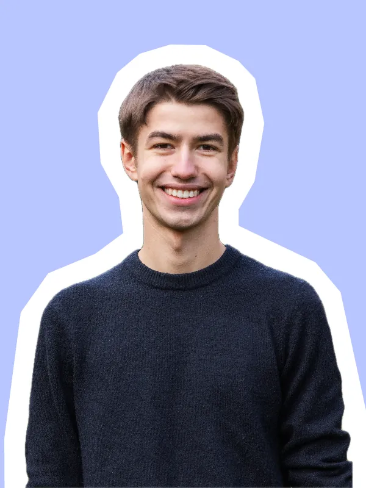
Buduje homi – system dla branży zarządzania nieruchomościami, z którego korzysta ponad 500 wspólnot w Polsce.
Piotrek Gątkowski
Co-founder & CEO homi
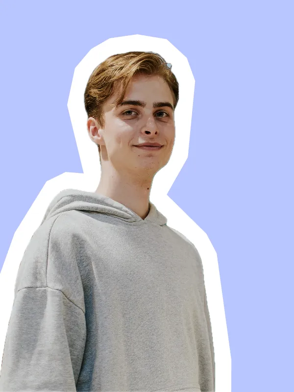
Po 2,5 roku spędzonych w LiveKid na stanowisku CEO of agents, przyszedł czas na nowy projekt.
Filip Lasyk
Stealth Startup
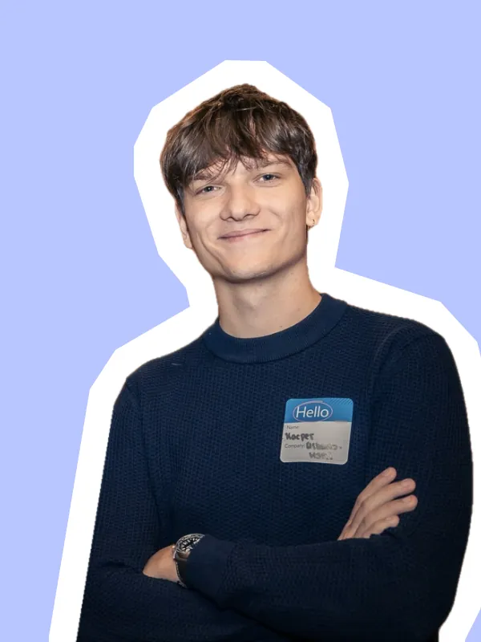
Wcześniej: AI w branży marketingowej i dla twórców UGC. Teraz: stealth startup.
Kacper Urbanowski
Stealth Startup, ex CTO Wayde
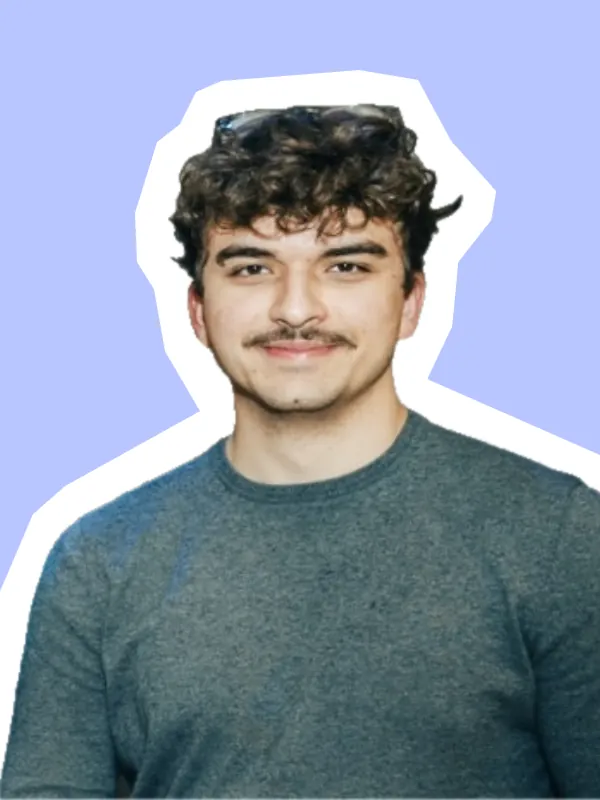
Co-founder MD Fellowship. Zaczynał od drukarek 3D w piwnicy, następnie budował Golf w ramach Y Combinator. Obecnie w stealth startupie.
Antoni Gmitruk
Stealth Startup, ex CTO Golf (YC X25)
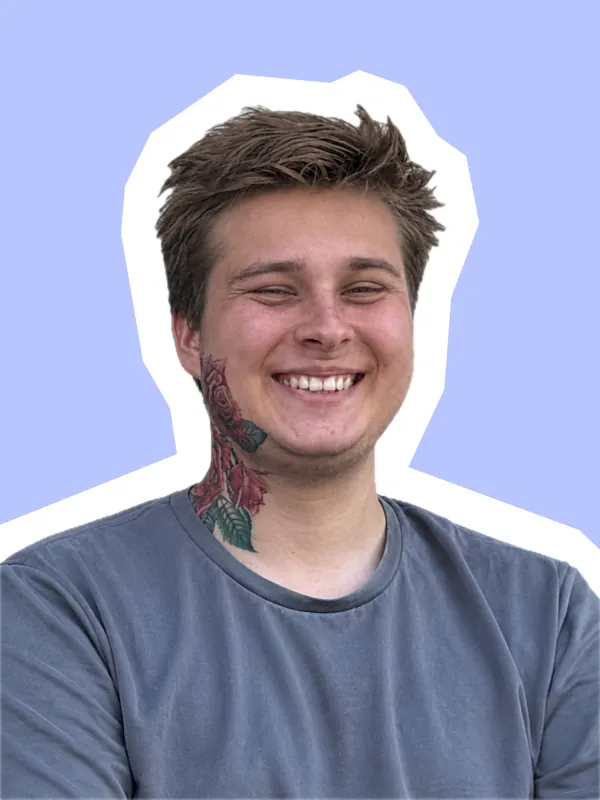
Wielokrotny laureat globalnej Olimpiady AI, buduje coś nowego.
Michał Karp
Stealth Startup
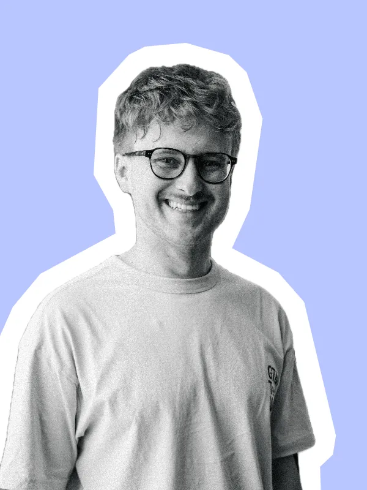
GTM engineering for teams that need ownership, not lock-in. McKinsey depth. Startup speed. Forward-deployed.
Artur Wala
Co-Founder GTM Tech Week
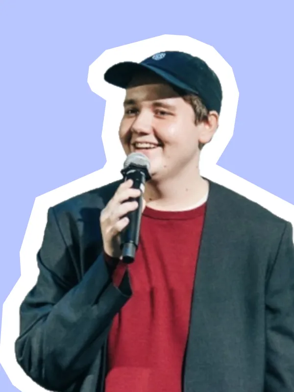
Founder SlimTwin – digital twin wspomagający utrzymanie zdrowych nawyków.
Oskar Wójcikiewicz
Founder SlimTwin
Masz 18–24 lata i chcesz zbudować własną firmę?
Nie potrzebujesz pomysłu, zespołu ani umiejętności programowania.
Potrzebujesz odwagi, żeby zadzwonić do obcej osoby i zapytać, co ją naprawdę boli.
Przyłożysz się?
Masz szansę skończyć program
z pierwszymi płacącymi klientami.
AplikujDeadline early bird: 19.10
FAQ
Nic, sam udział jest bezpłatny. W koszty wlicz jednak ewentualny nocleg i dojazd do Warszawy – są po Twojej stronie.
Nabór odbywa się w trzech rundach:
- Early bird: do poniedziałku, 19 października
- Regular: do poniedziałku, 26 października
- Last call: do wtorku, 3 listopada
Im szybciej zaaplikujesz, tym większe masz szanse na dostanie się do programu. Decyzję otrzymasz e-mailem na adres podany w zgłoszeniu.
Tym lepiej, bo nie musisz się z niczym rozstawać. Nauczymy Cię szukać problemów wartych rozwiązania.
Spoko, tu nie kodujemy. Na starcie rozmowy z klientami są ważniejsze niż kod.
Nic nie szkodzi. Możesz aplikować solo albo w parze.
Nie. Program jest właśnie dla osób, które dopiero zaczynają. Wystarczy, że chcesz się uczyć i nie boisz się rozmawiać z ludźmi.
Tak, jeśli chcesz sprawdzić, czy rozwiązujesz prawdziwy problem. Wielu founderów robi discovery dopiero wtedy, gdy produkt nie chce się sprzedawać. Lepiej zrobić to wcześniej.
Dwa pełne dni na miejscu (12–13 listopada), potem min. 10 godzin tygodniowo przez 4 tygodnie.
Jeśli się przyłożysz, zakończysz program z konkretną wizją na swoją własną firmę i pierwszymi płacącymi klientami. Dodatkowo każdy, kto ukończy Discovery Sprint, trafia od razu do 2. etapu rekrutacji do MD Fellowship.
Najtrudniej się przełamać.
Z resztą Ci pomożemy.
AplikujDeadline early bird: 19.10